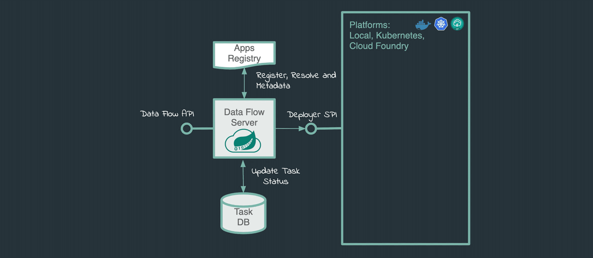
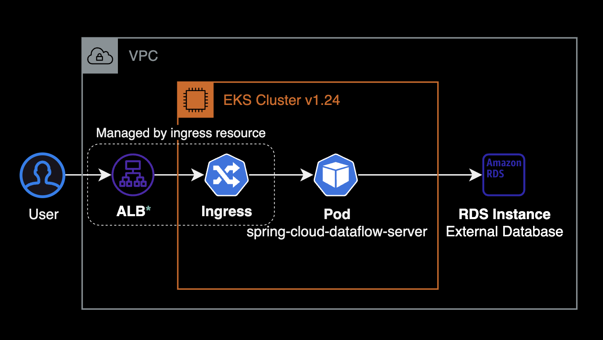
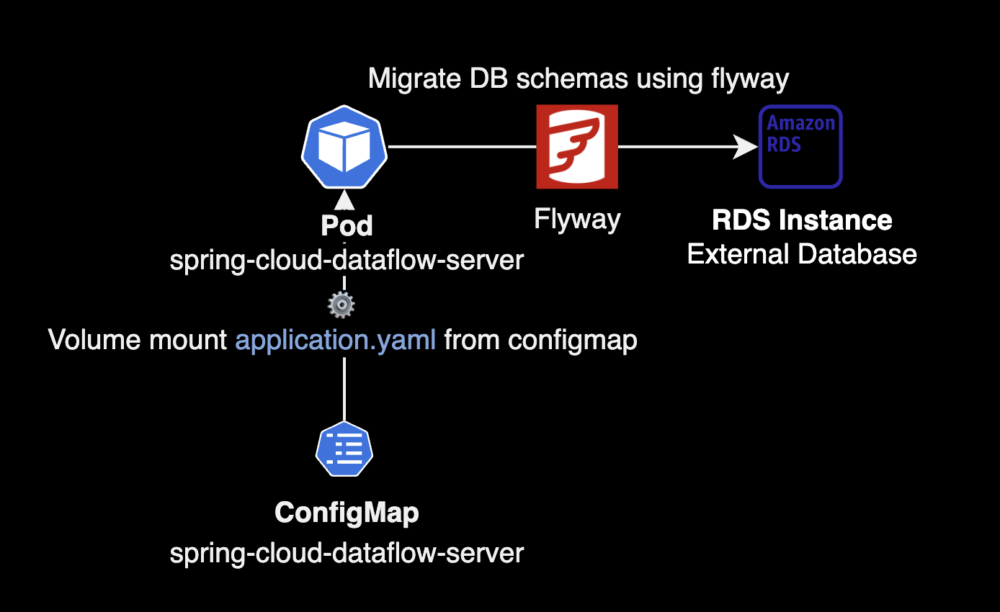
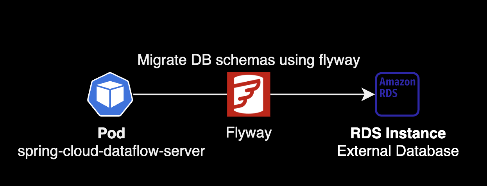
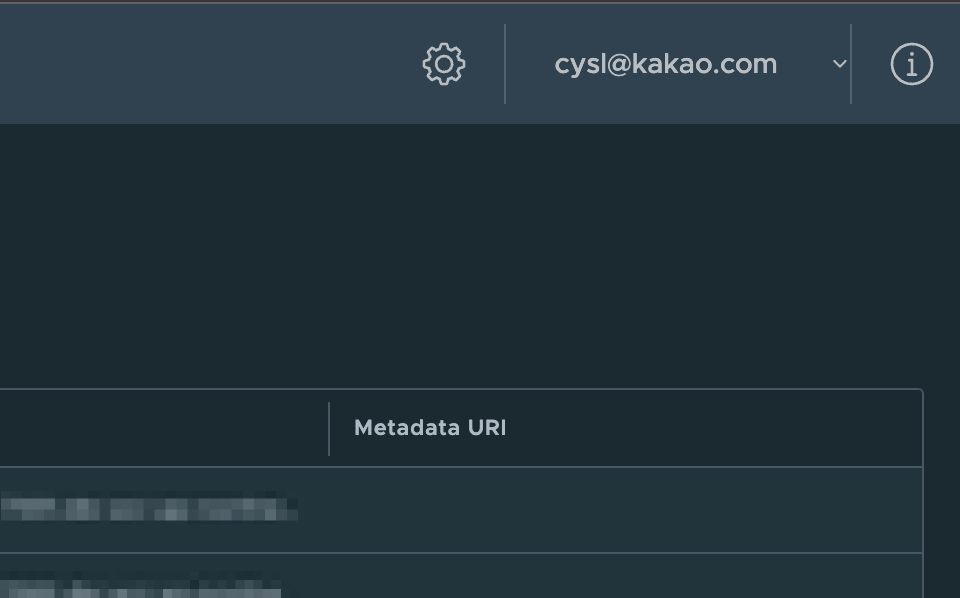

SCDF hack
개요
SCDFSpring Cloud Dataflow를 도입하고 운영하면서 쌓은 지식들을 정리한 페이지입니다.
쿠버네티스 클러스터에 SCDF를 설치하고 운영하는 DevOps Engineer를 대상으로 작성된 페이지입니다.
배경지식
Spring Cloud Data Flow
Spring Cloud Data FlowSCDF는 스트림 처리 및 Batch 작업을 위한 마이크로 서비스 기반의 데이터 플로우 관리 플랫폼입니다.
Task
Spring Cloud Data Flow에서 “Task"는 배치 작업을 나타내는 개념입니다. Task를 지원하는 플랫폼으로는 대표적으로 Kubernetes가 있습니다.

SCDF의 Task 실행은 Argo Workflows의 동작방식과 비슷합니다.
SCDF 사용자가 Kubernetes 환경에서 Task를 실행하게 되면 SCDF Deployer가 Task 실행을 위한 파드(Task pod)가 생성합니다.
이후 Task pod는 SCDF 사용자가 짜놓은 Workflow를 따라서 Batch 작업을 처리합니다. 작업이 종료되면 Task Pod는 자동으로 종료됩니다.
환경
EKS Cluster
- EKS v1.24
- EC2 워커노드
- CPU 아키텍처 : AMD64 (x86_64)
Spring Cloud Data Flow
Spring Cloud Data Flow 서버는 Kubernetes에 헬름차트로 설치했습니다.
제 경우 SCDF에서 스트리밍 애플리케이션을 처리할 필요가 없어서 Skipper는 기본값 그대로 enabled: false로 꺼둔 상태입니다.

- SCDF Version : v2.11.0
- bitnami 공식 helm chart를 사용해서 설치했습니다.
기본적으로 SCDF Server는 In-memory DB인 H2를 사용하도록 설정되어 있습니다. 그러나 제 경우 별도로 RDS MySQL을 생성한 후 External Database로 사용했습니다.
External Database
SCDF Server 전용으로 RDS와 같은 External Database를 사용하는 경우, DB 인프라 구성 작업이 추가로 필요합니다.
가이드
Flyway
spring-cloud-dataflow-server pod는 External Database에 스키마 자동 적용을 위해 Flyway를 내부적으로 사용합니다.
RDS MySQL과 같은 External Database에 DB Schema를 적용(Migrate)하고 싶은 경우 SCDF 헬름 차트에서 flyway.enabled를 true (기본값)로 설정합니다.
# values.yaml
## Flyway Configuration
## @param flyway.enabled Enable/disable flyway running Dataflow and Skipper Database creation scripts on startup
## All database creation scripts are ignored on startup when flyway.enabled is set to false
## This feature can be used in scenario, where Database tables are already present in Mariadb or ExternalDatabase.
##
flyway:
enabled: true
헬름차트에서 Flyway를 활성화한 후, Spring Cloud Data Flow 헬름 차트를 helm install 하거나 spring-cloud-dataflow-server 파드를 재시작합니다.
SCDF Server의 flyway 설정은 ConfigMap을 통해 파드에 주입됩니다.
kubectl get configmap -l app.kubernetes.io/instance=spring-cloud-dataflow
NAME DATA AGE
spring-cloud-dataflow-server 1 7s
spring-cloud-dataflow-skipper 1 7s
spring-cloud-dataflow-server ConfigMap에서 flyway 적용 여부를 확인할 수 있습니다.
kubectl describe configmap spring-cloud-dataflow-server
...
Data
====
application.yaml:
----
spring:
cloud:
dataflow:
...
flyway:
enabled: true
...
spring-cloud-dataflow-server ConfigMap은 쿠버네티스 플랫폼에 대한 상세 설정, 데이터 소스(External Database)에 대한 정보, Flyway 활성화 여부 등의 설정 정보를 보관하고 있습니다.

ConfigMap이 Pod에 적용되면서 Flyway 기능이 활성화됩니다.
SCDF Server Pod가 생성되면서 초기화될 때 Flyway를 사용하여, 동작에 필요한 DB Schema를 External Database에 적용하게 됩니다.

DB Schema가 V1부터 V9까지 총 9개 있다면, Flyway는 External Database에 V1부터 순차적으로 적용합니다.
spring-cloud-dataflow-server 파드가 생성될 때 로그를 보면 다음과 같은 정보를 확인할 수 있습니다.
- SCDF Server 파드가 External Database를 정상적으로 인식하고 연결되었는지 여부
- 현재 적용된 DB Schema 버전 (Flyway 관련)
- 새롭게 적용된 DB Schema 마이그레이션 진행사항과 결과
다음은 SCDF Server 파드에서 Flyway 관련 로그 예시입니다.
kubectl get logs -f spring-cloud-dataflow-server-57575d5f4b-6jq7k
2023-09-28 05:02:16.026 INFO 1 --- [ main] o.f.c.i.database.base.BaseDatabaseType : Database: jdbc:mariadb://scdf.dogecompany.com/dataflow (MySQL 5.7)
...
2023-09-28 05:02:16.103 INFO 1 --- [ main] o.f.core.internal.command.DbMigrate : Current version of schema `dataflow`: 5
2023-09-28 05:02:16.109 INFO 1 --- [ main] o.f.core.internal.command.DbMigrate : Migrating schema `dataflow` to version "6 - Boot3 Boot Version"
2023-09-28 05:02:16.299 INFO 1 --- [ main] o.f.core.internal.command.DbMigrate : Migrating schema `dataflow` to version "7 - Boot3 Add Task3 Batch5 Schema"
2023-09-28 05:02:16.841 INFO 1 --- [ main] o.f.core.internal.command.DbMigrate : Migrating schema `dataflow` to version "8 - RenameLowerCaseTables"
2023-09-28 05:02:16.935 INFO 1 --- [ main] o.f.core.internal.command.DbMigrate : Migrating schema `dataflow` to version "9 - AddAggregateViews"
2023-09-28 05:02:17.038 INFO 1 --- [ main] o.f.core.internal.command.DbMigrate : Successfully applied 4 migrations to schema `dataflow`, now at version v9 (execution time 00:00.941s)
...
기존 DB Schema 버전은 v5였으나, 새롭게 v6부터 v9까지 DB Schema 마이그레이션이 적용되었습니다. 현재 DB Schema 버전은 v9으로 Flyway의 모든 설정이 적용되었습니다.
Flyway에 의해 적용될 DB Migration Schema 전체 목록은 SCDF Server Core 공식 코드에서 확인할 수 있습니다.
Task Pod를 위한 공통 환경변수
SCDF Task에 의해 생성되는 모든 파드들에 특정 환경변수를 넣고 싶은 경우, SCDF 헬름 차트에서 deployer.environemntVariables에 선언합니다.
아래는 공통 환경변수의 설정 예시입니다.
# values.yaml
## @section Deployer parameters
## Spring Cloud Deployer for Kubernetes parameters.
##
deployer:
environmentVariables:
- ENVIRONMENT_PROFILE=dev
- JAVA_TOOL_OPTIONS=-Xmx1024m
위와 같이 설정된 경우 2개의 환경변수가 Task pod 생성시 자동으로 주입됩니다.
Task pod 생성시 글로벌하게 주입되는 환경변수인 environmentVariables도 마찬가지로 ConfigMap에 의해 관리됩니다.
kubectl describe configmap spring-cloud-dataflow-server -n default
...
Data
====
application.yaml:
----
spring:
cloud:
dataflow:
task:
platform:
kubernetes:
accounts:
default:
environmentVariables:
- ENVIRONMENT_PROFILE=dev
- JAVA_TOOL_OPTIONS=-Xmx1024m
이미지 가져오기 정책
Task 실행시 항상 최신 버전의 컨테이너 이미지를 가져오고 싶은 경우, 헬름 차트에서 deployer.imagePullPolicy를 IfNotPresent를 Always로 변경한 후 적용합니다.
# values.yaml
## @section Deployer parameters
## Spring Cloud Deployer for Kubernetes parameters.
##
deployer:
imagePullPolicy: Always
imagePullPolicy에 사용 가능한 값은 IfNotPresent (기본값), Always, Never이 있습니다.
Google OAuth 연동
SCDF는 기본 설치하면 전혀 로그인 방식 없이 URL로 바로 접근 가능한 상태입니다.
편하게 유저 관리 및 사용자가 로그인할 수 있도록 Google OAuth를 연동했습니다.
아래는 로컬에 clone 받은 spring-cloud-dataflow 차트 내부 구조입니다.
$ tree spring-cloud-dataflow
spring-cloud-dataflow
├── Chart.lock
├── Chart.yaml
├── README.md
├── charts
│ ├── common-2.13.3.tgz
│ ├── kafka-26.3.0.tgz
│ ├── mariadb-14.1.0.tgz
│ └── rabbitmq-12.4.0.tgz
├── templates
│ ├── ...
│ ├── server
│ │ └── configmap.yaml # 여기에 OAuth 연동 설정 추가
│ ├── serviceaccount.yaml
│ ├── skipper
│ │ └── ...
│ └── spc.yaml
├── values.schema.json
└── values.yaml
OAuth와 관련된 설정은 SCDF Server의 ConfigMap에 추가해야 합니다.
아직 Bitnami의 SCDF 차트는 OAuth 관련 설정을
values.yaml로 제어할 수 있도록 작성되지 않았습니다. 따라서 SCDF Server의 ConfigMap 템플릿 파일에 직접 OAuth 관련 설정값을 넣어두는 방식을 채택했습니다.
GCP OAuth 연동에 성공한 SCDF Server의 ConfigMap의 설정 정보 예시입니다.
Data
====
application.yaml:
----
spring:
security:
oauth2:
client:
registration:
google:
client-id: <REDACTED>.apps.googleusercontent.com
client-secret: <REDACTED>-<REDACTED>
scope:
- profile
- email
redirect-uri: https://scdf.example.com/login/oauth2/code/google
authorization-grant-type: authorization_code
provider:
google:
user-info-uri: https://www.googleapis.com/oauth2/v3/userinfo
user-name-attribute: email
cloud:
dataflow:
security:
authorization:
provider-role-mappings:
google:
map-oauth-scopes: false
OAuth 설정
위 application.yaml의 설정들 중에서 OAuth 토큰 관련 값은 다음과 같습니다.
client-idclient-secretredirect-uri
GCP에서 API 및 서비스 → OAuth 2.0 클라이언트 ID를 생성한 다음 발급된 값들을 위 ConfigMap 데이터에 입력하면 됩니다.
OAuth 연동은 SCDF 공식문서의 Configuration examples를 참고해서 진행했습니다.
SCDF 권한 맵핑
기본적으로 Spring Cloud Data Flow에 로그인하는 사용자에게 모든 SCDF 내부 권한(Role)이 할당됩니다.
위 설정의 경우 spring.cloud.dataflow.security.authorization.provider-role-mappings.google.map-oauth-scopes 값을 false로 설정했기 때문에 모든 사용자가 모든 권한을 가지게 되는 구조입니다.
이를 해결하려면 다음과 같이 map-oauth-scopes를 true로 설정하고 role-mappings에 세부적인 권한 맵핑 설정을 추가하면 됩니다.
Data
====
application.yaml:
----
spring:
cloud:
dataflow:
security:
authorization:
provider-role-mappings:
google:
map-oauth-scopes: true
role-mappings:
ROLE_CREATE: dataflow.create
ROLE_DEPLOY: dataflow.deploy
ROLE_DESTROY: dataflow.destroy
ROLE_MANAGE: dataflow.manage
ROLE_MODIFY: dataflow.modify
ROLE_SCHEDULE: dataflow.schedule
ROLE_VIEW: dataflow.view
자세한 사항은 SCDF 공식문서 Customizing Authorization을 참고해서 설정합니다.
로그인된 사용자의 이름 표시
user-name-attribute 값에는 email, name을 사용할 수 있습니다.
| user-name-attribute | 로그인시 표시되는 값 |
|---|---|
email |
younsl@example.com |
name |
이윤성 |
user-name-attribute를 설정하지 않은 경우, 로그인된 사용자의 우측 상단에 표시되는 자신의 이름이 고유한 숫자 고유넘버로 표시됩니다.
user-name-attribute을 email로 설정하게 되면 SCDF 웹 화면의 우측 상단에 다음과 같이 사용자의 이메일 정보가 표시됩니다.

참고자료
Spring Cloud Data Flow Reference Guide
SCDF 운영과 관리에 대한 전반적인 내용이 담긴 SCDF 공식문서입니다. 그렇게 문서가 친절한 편은 아닌게 아쉽습니다.